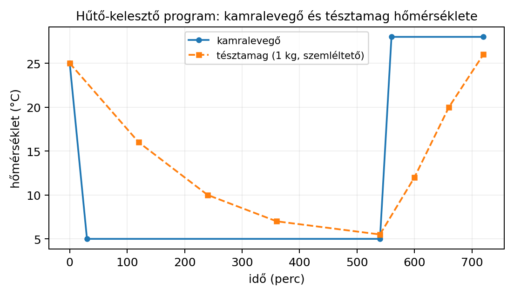

Egy pékségben a hétvégi, ünnepi vagy hosszú éjszakai gyártásnál gyakori probléma: a megformázott tésztadarabok akkor kelnének meg, amikor a csapat még nem tud sütni, vagy a vevő nem venné át az árut. Ilyenkor a hagyományos kelesztőkamra nem elég, mert a tésztát nem lehet hosszú órákra biztonságosan visszafogni. A hűtő-kelesztő berendezés ezt a gondot oldja meg: hidegen tartja a tésztát, majd a beállított időpontban felfűti és szabályozottan keleszti, így a sütőcsapat friss, időzített tésztadarabokat kap. A nagyobb üzemekben a gépi kelesztők pedig a folyamatos, egyenletes kelesztést biztosítják akkor is, ha óránként eltérő mennyiségű tésztát kell feldolgozni.
Ez az alfejezet a(z) Kelesztőkamrák és beállításuk, a(z) Késleltetett és megszakított kelesztés, a kelesztés szervezése és a(z) Hűtőgépek, hőcserélők és méréstechnikai alapok ismereteire épít. A tananyag végeredményét a sütésnél használjuk fel: a tészta megkeltsége, a felületi nedvesség, a bél hőmérséklete és a gáztartalom határozza meg a sütés induló feltételeit.
A hűtő-kelesztőben a tészta maghőmérséklete a vezérlő által előírt görbe szerint változik. Egy éjszakai programban például először lehűl kb. 5 °C-ra, ott marad több órán át, majd reggel felfűtés után kelesztési hőmérsékleten megkel.

Az ábra négy szakaszt mutat: a meredekebb hűlési szakasz, a hosszú, közel vízszintes tartási szakasz, majd a felfutás és a kelesztés meleg szakasza. A valós görbe a tésztadarab méretétől, a betöltött mennyiségtől és a gép hűtő-teljesítményétől függ, ezért az ábrán látható számok tanulási példák, nem üzemi előírások.
Definíció. A hűtő-kelesztő (retarder proofer, késleltető kelesztő) olyan szigetelt, programozható kamra, amely a megformázott tésztadarabokat először lehűti, alacsony hőmérsékleten tartja, majd felfűtve szabályozott kelesztési környezetet biztosít.
Definíció. A gépi kelesztő olyan berendezés, amely a tésztadarabokat szabályozott hőmérsékleten, relatív páratartalom mellett és meghatározott idő alatt keleszti, függetlenül attól, hogy a betétet szakaszosan vagy folyamatosan mozgatja.
A hűtő-kelesztő fő részei:
A hűtőkör alapelvét a hűtőgépes alfejezetben már tanultad. A péknek nem kell a hűtőközeg műszaki részleteit kezelnie, de a hűtés alatt a felületi száradást, a lecsapódást és a jegesedést figyelnie kell.
A hűtő-kelesztő működése négy fázisra bontható:
Megjegyzés. A hűtő-kelesztő tehát egyetlen berendezésben egyesíti a hűtőszekrény és a kelesztőkamra funkcióját. A fázisok közötti átmenetet programozni kell, ezért a pontos beállítás kulcskérdés.
A modern hűtő-kelesztő vezérlője grafikus vagy nyomógombos, és legalább a következőket lehet rajta beállítani:
A páratartalom-szabályozás célja kettős. Ha túl alacsony a páratartalom, a tészta felülete bőrösödik, a későbbi kemencehatásra nem nyílik meg szépen, a héj száraz és repedezett lesz. Ha túl magas, vagy a levegőből kicsapódó víz ráfolyik a tésztára, a felület ragacsossá, foltossá válik, a kocsi vagy a szakajtó is átnedvesedik. A hűtési szakaszban a lecsapódás veszélye nagyobb, mert a hideg elpárologtató környezetében a nedvesség kiválik. Ezért a kamrában csepegtető tálcának, lefolyónak és rendszeres leolvasztó ciklusnak kell lennie.
A hőmérséklet-érzékelő helyzete is befolyásolja a programot. A mérő ne közvetlenül a levegőbefúvó előtt vagy a fűtőbetét mellett legyen, hanem a tésztadarabok közelében, de ne érjen hozzá a forró vagy hideg fémfelülethez. A kamrán belüli hőmérséklet-eloszlást időnként külön hőmérővel is ellenőrizni kell.
Higiénia. A hűtő-kelesztő meleg, párás tere kedvez a penésznek, az élesztős lerakódásnak és a baktériumoknak. Naponta le kell törölni a belső felületeket, a lefolyót át kell öblíteni, és a leolvasztó ciklust a gyártó szerint kell futtatni. Az ajtótömítést hetente ellenőrizni kell, mert a sérült tömítés miatt a pára és a szennyeződés bejut a tömítés mögé, és a hőmérséklet sem tartható pontosan.
HACCP. A hűtő-kelesztőben a tartási hőmérséklet és a tartási idő tanulási példaként is értelmezhető ellenőrzési pont. Ha a hűtési szakasz túl lassú, a tészta a hűtőben is tovább erjed: túlkelt, savanyú illatú lesz. Ha a tartási hőmérséklet tartósan, például 8 °C fölé emelkedik, a mikrobiológiai kockázat nő (ellenőrizendő: a pékség HACCP-terve és a hatósági útmutató szerinti határérték). A berendezés hőmérsékletét és az eltéréseket dokumentálni kell.
A gépi kelesztőket a betét kezelése szerint két csoportba osztjuk.
Szakaszos gépi kelesztők. Ide tartoznak a kelesztőszekrények, a kelesztőkocsik befogadására alkalmas kamrák és a kisebb, programozható gépi kelesztők. A tésztadarabokat kocsikon, lemezeken, szakajtókban vagy formákban betolják, az ajtó bezárul, a berendezés a beállított ideig keleszt, majd a kocsit kihúzzák. A szakaszos üzem egyszerű, könnyen igazítható a termékváltáshoz és a kisebb tételekhez.
Folyamatos gépi kelesztők. Nagyobb üzemekben a tésztadarabok egy alagútszerű gépi keltetőn haladnak át. A darabok láncpályán, függesztett kosarakban, szalagos rendszerű tányérokon vagy kocsifolyamon közlekednek. A tartózkodási időt a pályasebesség és a kelesztési hossz határozza meg. A kamra több zónában szabályozza a hőmérsékletet, a páratartalmat és a légkeringetést.
Az alábbi sematikus oldalnézet egy függesztett kosaras, láncpályás kelesztőt mutat. A kezelő (11) a betáplálásnál (1) a formázott darabokat a kosarakba juttatja; a kosarak (2) a láncpályán a szigetelt alagútban (3) haladnak, ahol a párásító és a fűtés (4), valamint a ventilátor (5) tartja a klímát; a pálya végén a kosarak a kemence vetőszalagjára ürítenek (6). A biztonsági elemek: védőrács a lánchajtásnál (7), reteszelt ellenőrzőajtó (8), vészleállító a betáplálásnál és a kiadásnál (9). A sraffozott veszélyzóna (10) a lánckerék behúzási pontja, ahol a lánc a kerékre fut.
A vészleállító (9) a gépet megállítja, de nem választja le a hálózatról: elakadt kosár vagy leesett darab eltávolítása előtt a gépet a főkapcsolóval le kell választani, és újraindítás ellen biztosítani kell (lásd a lenti Gépbiztonság. bekezdést). A HTML-kiadásban a védőelemek és a veszélyzóna rétege ki-be kapcsolható.
A kenyér- és a süteménytészta kelesztése eltérő beállítást igényel:
Alkalmazási feltételek. A gépi kelesztő akkor működik jól, ha:
Gépbiztonság. A hűtő-kelesztő és a gépi kelesztő is munkaeszköz: a tanuló csak betanítás után, felügyelettel kezelheti. Üzem előtt ellenőrizni kell az ajtók állapotát, a vészleállítót, a hőmérséklet- és páratartalom-kijelzést, a csepegtető lefolyót és a kamra belső sérüléseit. Tisztítás vagy beavatkozás előtt a gépet le kell állítani, áramtalanítani, és újraindítás ellen biztosítani. A forgó ventilátor csak a teljes megállás után közelíthető meg.
Tilos. Tilos a hűtő-kelesztő ajtaját használat közben kiékelni, a védőrácsot eltávolítani, a hűtőrácsot késsel vagy csavarhúzóval jéggel leverni, és a leolvasztást a gyártói program módosításával „gyorsítani”. A hűtőközeggel kapcsolatos minden javítás szakember feladata; a pék a szivárgás gyanúját, a rendellenes zajt vagy a hűtési teljesítmény romlását köteles jelezni.
Figyelem. A felfűtés és a gőzölés során forró felületek és forró gőz okozhat égést. A kamra ajtaját csak akkor nyissa ki, ha a vezérlő szerint a felfűtés már leállt, vagy a gyártói utasítás ezt megengedi, és mindig a hőtől védő kesztyűt viseljen.
Recept. Az alábbi lépések nem egy termékrecept, hanem a berendezés kezelésének ellenőrzőlistája; az egyes paramétereket mindig a termék technológiai lapja és a gép gyártói dokumentációja határozza meg (ellenőrizendő: üzemi technológiai lap, gyártói adatlap).
Példa 1: éjszakai hűtő-kelesztő program időterve
Adott: a tésztát 22:00-kor töltik be. A program: hűtés 120 perc alatt 5 °C-ra, tartás 6 óra 30 perc, felfutás 50 perc 32 °C-ig, kelesztés 45 perc 32 °C-on. Keresett: mikor vehető ki a tészta a sütéshez?
Számítás: a teljes programidő:
A betároláshoz:
Ellenőrzés: a hűtés vége 24:00, a tartás vége 6:30, a felfutás vége 7:20, a kelesztés vége 8:05. A program hossza reális, és a tészta a reggeli sütéshez időben rendelkezésre áll. ∎
Példa 2: a hőmérséklet-eloszlás ellenőrzése
A gép kezelője a kelesztőkamra két pontján mér: a kocsi első sorában 27,5 °C-ot, a hátsó sorában 31,3 °C-ot. Keresett: mekkora az eltérés, és megfelelő-e, ha az üzemi technológiai lap legfeljebb 2 °C eltérést enged?
Számítás: Az eltérés 3,8 °C, ami nagyobb a megengedett 2 °C-nál, ezért a kamra hőmérséklet-eloszlása nem megfelelő. Ellenőrzés: a két mérés közötti átlag kiszámítható, de a lényeg az eltérés; a nagy különbség a légkeringetés hibáját vagy a hőmérsékleti rétegződést jelezheti. A valódi okot méréssel, a betöltés ellenőrzésével és a ventilátor vizsgálatával kell feltárni. ∎
Valós eset. Egy pékség vasárnap hajnalra fonott kalácsot készített. Szombaton 20:00-kor betették a megformázott kalácsokat a hűtő-kelesztőbe. A programot 4 °C tartási hőmérsékletre, hajnali 3:00-s felfutásra és 3:30-s kelesztésre állították. Reggel a kalácsok felülete száraz, bőrös volt, és a fonatok nem nyíltak szépen a sütésnél. A kezelő ellenőrizte a páratartalom-naplót: a hűtési és tartási szakaszban a relatív páratartalom csak 70 % volt, és a ventilátor mindvégig maximális fokozaton üzemelt. A tésztafelület a hosszú hűtés alatt kiszáradt.
Tanulság. A hűtő-kelesztőben nem elég a hőmérsékletet beállítani. A páratartalmat a hűtési és tartási fázisban magasan kell tartani, a légsebességet pedig csökkenteni, hogy a hideg levegő ne szárítsa a felületet (ellenőrizendő: a gyártói ajánlás és az üzemi technológiai lap). A hibás kalácsból nem lehetett szép, bőven kinyílt terméket sütni.
A hűtő-kelesztőből kikerülő tészta minőségét a sütés előtt így ellenőrizd:
Hiba 1: a tészta túlkél a hűtő-kelesztőben. Tünet: a tészta savanyú szagú, ellaposodik, a sütésnél nem tartja a formáját. Lehetséges ok: a hűtési fázis túl lassú, a kamra túl tele van, az ajtó nem zár, vagy a hűtőrács jeges. Helyes gyakorlat: a betöltött mennyiséget a kamra kapacitásához igazítani, az ajtótömítést ellenőrizni, a leolvasztást rendszeresen elvégezni, és a hűtési időt a tészta maghőmérséklete alapján ellenőrizni.
Hiba 2: a tészta bőrösödik. Tünet: a felület száraz, vékony hártya feszül rajta, a sütésnél a darab nem nyílik ki. Ok: alacsony páratartalom, erős közvetlen légáram, hosszú tartási idő megfelelő párásítás nélkül. Megelőzés: a páratartalmat a termékre jellemző magas értéken tartani, a ventilátort mérsékelt fokozatra állítani, és a hűtési szakaszban a levegőt a tésztáról elterelni.
Hiba 3: lecsöpögő víz a tésztán. Tünet: ragacsos, foltos felület, a szakajtó vagy a forma alja nedves. Ok: túl magas páratartalom, rossz leolvasztás, a csepegtető tálca megtelt, a lefolyó eldugult. Megoldás: a páratartalom mérséklése, a leolvasztó ciklus és a lefolyó karbantartása, a kamra nyitásakor a tésztát óvni a hideg falszakaszról lecsöpögő víztől.
Hiba 4: a gépi kelesztő egyenetlenül keleszt. Tünet: a folyamatos kelesztő elején túlkelt, a végén alulkelt a tészta. Ok: a pályasebesség nem megfelelő, a hőmérséklet-zónák elállítódtak, a kamra túlterhelt, vagy a tésztadarabok tömege és hőmérséklete nagy eltérést mutat. Hibafeltárás: mérni kell a tartózkodási időt, a zónahőmérsékleteket, a tészta maghőmérsékletét, és a betöltött darabtömegeket. A javítás a sebesség vagy a zónabeállítás korrigálása.
1. feladat (A). Sorold fel a hűtő-kelesztő négy működési fázisát, és mindegyiknél nevezd meg a fő célt.
2. feladat (A). Írd le röviden, hogy mi a relatív páratartalom szerepe a kelesztőben, és mi történik, ha túl alacsony, illetve túl magas.
3. feladat (B). Egy hűtő-kelesztő program a következő: hűtés 90 perc, tartás 5 óra 30 perc, felfutás 40 perc, kelesztés 35 perc. Ha 20:00-kor indítod, mikor veszed ki a tésztát?
4. feladat (B). Egy szakaszos kelesztőkamra 12 kocsit fogad, kocsinként 20 lemez van, és egy lemezen 8 db, egyenként 0,55 kg-os tésztadarab fér el. Mennyi a betölthető teljes tésztatömeg?
5. feladat (C). A hűtő-kelesztőben süteménytésztát kelesztettél, de a tészta felülete bőrös, a kamra hőmérséklete 32 °C, a relatív páratartalom 70 %, a ventilátor maximális. Mi a hiba oka, és milyen beállításon változtatnál?
6. feladat (D). A továbbvitt eredményt előkészítő kérdés: magyarázd el, miért fontos a hűtő-kelesztőből kikerülő tésztadarabok egyenletes hőmérséklete, felületi nedvessége és gáztartalma a kemence sütési folyamatának indulásakor.
7. feladat (D). Egy folyamatos gépi kelesztőből a kenyértészta egyik oldala túlkelt, a másik alulkelt. Sorold fel a lehetséges okokat, és írd le, milyen mérésekkel, ellenőrzésekkel derítenéd ki a hibát.
1. feladat. A négy fázis: (1) hűtés – az erjedés lelassítása; (2) tartás – alacsony hőmérsékleten a tészta visszafogása; (3) felfutás – a kemencébe vetés előtti felmelegítés; (4) kelesztés – a kívánt térfogat és gáztartalom kialakítása.
2. feladat. A páratartalom a tészta felületének nedvességét, a bőrösödés megelőzését és a kondenzáció szabályozását szolgálja. Túl alacsony értéknél a felület kiszárad, bőrösödik; túl magas értéknél a tészta ragacsossá válik, lecsöpögő víz foltokat okoz.
3. feladat. A programidő 90 + 330 + 40 + 35 = 495 perc = 8 óra 15 perc. 20:00 + 8:15 = 4:15. A tészta 4:15-kor vehető ki.
4. feladat. A betölthető tésztatömeg: Ellenőrzés: a darabok száma 1920, az össztömeg 1920 · 0,55 = 1056 kg. ∎
5. feladat. A hiba oka a túl erős légmozgás és a túl alacsony páratartalom. A ventilátorfokozatot csökkenteni kell, a relatív páratartalmat 75–85 %-ra emelni, és szükség esetén a kelesztési időt a hőmérséklethez igazítani.
6. feladat. A hűtő-kelesztőből kikerülő tészta egyenletes hőmérséklete a kemence hőközlésének időbeli lefutását befolyásolja; ha a tésztadarabok maghőmérséklete eltér, a tésztaváz, majd a héj kialakulása is eltér. Az egyenletes felületi nedvesség a gőzölésnél és a héj feszülésénél fontos, a gáztartalom pedig a kemencerugás mértékét határozza meg. Az egyenetlen kelesztés tehát közvetlenül egyenetlen sütést, héjrepedést vagy rossz átsültséget okoz.
7. feladat. Lehetséges okok: rossz pályasebesség vagy tartózkodási idő; elállt hőmérséklet-zónák; a kamra túlterhelése; a tésztadarabok tömege, alakja vagy hőmérséklete nem egyenletes; a légkeringetésben holt terek vannak; az ajtó vagy a hőszigetelés hőhidat okoz. Ellenőrzés: mérni kell a tartózkodási időt stopperrel, a zónahőmérsékleteket hőmérővel, a tészta maghőmérsékletét különböző pontokon, és meg kell vizsgálni a betöltött darabok tömegét, alakját. A mért adatok alapján kell a pályasebességet, a zónabeállítást vagy a betöltési rendet módosítani.
A hűtő-kelesztő programozható berendezés, amely a megformázott tésztadarabokat lehűti, alacsony hőmérsékleten tartja, majd felfűtve szabályozottan keleszti. A négy fázis: hűtés, tartás, felfutás, kelesztés. A páratartalom-szabályozás célja a felületi bőrösödés és a lecsapódó víz elkerülése. A gépi kelesztők szakaszos vagy folyamatos kivitelben készülnek; a kenyér- és süteménytészta kelesztése eltérő hőmérséklet-, páratartalom- és légáram-beállítást igényel. A gépi kelesztők alkalmazásának feltétele a technológiai lap szerinti egyenletes tészta, a megfelelő betöltés, a tiszta kamra és a program ellenőrzése. A gépbiztonsági szabályok szerint tisztítás és karbantartás előtt a gépet le kell állítani, áramtalanítani, újraindítás ellen biztosítani; a hűtőközeggel kapcsolatos javítást szakember végzi. A hűtő-kelesztő hőmérséklete és a tartási idő dokumentálandó ellenőrzési pont. A kelesztésből kikerülő tészta hőmérséklete, felületi nedvessége és gáztartalma a sütés induló feltételeit határozza meg.
Továbbvitt eredmény. A hűtő-kelesztő fázisainak, a páratartalom-szabályozásnak és a gépi kelesztők egyenletes működésének ismeretét a(z) A sütés célja és a bélzetben lejátszódó folyamatok alfejezetben használjuk fel, ahol a kelesztésből származó tészta hőmérséklet-, gáz- és nedvességállapota a sütési folyamat kiindulási feltétele.
A hűtő-kelesztő és gépi kelesztő biztonságos üzemeltetésére a gépek forgalomba hozatalára és üzemeltetésére vonatkozó uniós gépekre vonatkozó szabályozás, a munkaeszközök biztonsági követelményeit meghatározó magyar munkavédelmi előírások és a gyártói használati utasítások vonatkoznak. A hűtőközegek kezelésére az F-gáz rendelet és magyar végrehajtási szabályai irányadók. A pontos jogszabályszámokat, a hűtő-kelesztő hőmérsékleti és páratartalmi ajánlásait, illetve a HACCP határértékeket a kiadás előtt ellenőrizni kell a hatályos jogszabályokban, a pékség HACCP-tervében és a berendezés gyártói dokumentációjában. A példákban szereplő hőmérsékletek, relatív páratartalmak és időadatok tanulási példák, nem hatósági előírások vagy gyártói utasítások.